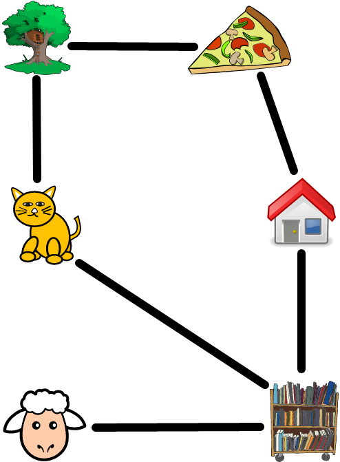

Check the dictionary
A map, dictionary, hash table, or associative array all refer to the same concept: a way of associating a unique key to a value. The word map is used in JavaScript. Arrays are a restricted version of a map. In an array, a key (or index) must be a nonnegative integer and the corresponding value is the array element at the given index. A map extends this key/value association by allowing a key to be any number, a string, a boolean, or some other data type. A JavaScript map can be thought of as a dictionary of the English language. Each word in the dictionary is a key whose corresponding value is the definitions of the word.
Map construction
Use the
new Map()
constructor to create an empty map. To initialize the map with some key/value
pairs, pass an array of arrays to the constructor via this format:
const map = new Map([
[key1, value1],
[key2, value2],
...,
[keyN, valueN],
]);
As shown above, you pass an array to the constructor. Each entry (or element) of
the array is a subarray having 2 elements: the first element is the key, the
second being the corresponding value. The keys must be unique. You can pass in 2
or more subarrays that share the same key, but the subarray having the lowest
index will be retained. The number of entries in the map can be queried by means
of the property
size,
which returns the number of (unique) keys in the map. Use the method
has()
to determine whether a map has a specified key. The following example uses a map
to implement a simple database.
/**
* Use map to implement a database.
*
* @param {NS} ns The Netscript API.
*/
export async function main(ns) {
const db = new Map([
[123, "Sam McPherson, pet owner"],
[456, "Tabby Whiskers, cat overlord"],
[789, "Terry Terrier, sub woofer"],
[123, "Sam Furguson"], // Duplicate key; will be dropped.
]);
ns.tprintf(`Database has ${db.size} entries.`);
ns.tprintf(`Is Sam in the database? ${db.has(123)}`);
}
Map insertion
Use the method
set()
to add new entries to a map. The method takes 2 arguments:
map.set(key, value);
The first argument is the key, the second the value associated with the given
key. The method
get()
allows you to query the value associated with a key. The methods set() and
get() are commonly referred to as setter and getter, respectively. These
methods and their names provide clues to their functionalities: to modify (i.e.
set()) a store of data and to query (i.e. get()) the store for a particular
value.
The example below demonstrates the use of the setter and getter map methods. The
example shows that you can chain the setter method, similar to how you can chain
the set method
add().
fruit-db.js
/**
* Use the getter and setter of a map.
*
* @param {NS} ns The Netscript API.
*/
export async function main(ns) {
const fruit = new Map();
fruit.set("A", "apple");
fruit.set("B", "banana").set("C", "cherry").set("D", "duku"); // chaining the setter
ns.tprintf(`Database has ${fruit.size} entries.`);
ns.tprintf(`Fruit name starting with D: ${fruit.get("D")}`);
const allFruits = [...fruit.values()]; // spread syntax
ns.tprintf(allFruits.join(", "));
}
Note that you can use the spread syntax to obtain an array of all values (i.e. fruits) in a map. The spread syntax can similarly be used to obtain an array of all keys in a map.
Map deletion
Similar to a set, a map allows you to remove one entry or all entries at once.
The method
delete()
accepts a key and attempts to remove the value associated with the given key, if
it exists in the map. The method
clear()
removes all entries from a map. The example below demonstrates how to remove
entries from a map.
/**
* Delete entries from a map.
*
* @param {NS} ns The Netscript API.
*/
export async function main(ns) {
const pet = new Map([
["bird", "Chirp O'Tweet"],
["cat", "Scratchy Meowser"],
["dog", "Woofy McBark"],
["hamster", "Hamsuke Hamton"],
["mouse", "Anonymouse"],
["rabbit", "Robbie Hopster"],
]);
ns.tprintf(`Database has ${pet.size} entries.`);
pet.delete("cat");
ns.tprintf(`Deleted "cat". Database now has ${pet.size} entries.`);
ns.tprintf(`Is "cat" in database? ${pet.has("cat")}`);
pet.clear();
ns.tprintf(`Delete entire database.`);
ns.tprintf(`Database now has ${pet.size} entries.`);
}
Map traversal
You have several options for traversing a map. The options can be organized according to the following classification:
- Traversal via a key. Use the method
keys(). - Traversal via a value. Use the method
values(). - Traversal via key/value pair. Use the
for...ofstatement or the map methodforEach(). The methodentries()also allows you to iterate over each key/value pair and is more or less equivalent to using thefor...ofstatement. The methodforEach()expects a function that takes 2 parameters in this order: value and key.
The following example uses the above techniques to traverse the entries of a map.
map-walk.js
/**
* Traverse a map via the method forEach().
*
* @param {NS} ns The Netscript API.
* @param {map} map Iterate over the entries of this map.
*/
function forEachWalk(ns, map) {
// It's value/key pair, not key/value pair.
ns.tprintf("Traversal via forEach().");
const printEntry = (value, key) => ns.tprintf(`${key}: ${value}`);
map.forEach(printEntry);
}
/**
* Traverse a map via for...of statement.
*
* @param {NS} ns The Netscript API.
* @param {map} map Iterate over the entries of this map.
*/
function forOfWalk(ns, map) {
ns.tprintf("Traversal via for...of statement.");
for (const [key, value] of map) {
ns.tprintf(`${key}: ${value}`);
}
}
/**
* Traverse a map via its keys.
*
* @param {NS} ns The Netscript API.
* @param {map} map Iterate over the keys of this map.
*/
function keyWalk(ns, map) {
ns.tprintf("Traversal via keys.");
for (const key of map.keys()) {
ns.tprintf(`${key}: ${map.get(key)}`);
}
}
/**
* Traverse a map via its values.
*
* @param {NS} ns The Netscript API.
* @param {map} map Iterate over the values of this map.
*/
function valueWalk(ns, map) {
ns.tprintf("Traversal via values.");
for (const value of map.values()) {
ns.tprintf(`${value}`);
}
}
/**
* Iterate over each entry of a map.
*
* @param {NS} ns The Netscript API.
*/
export async function main(ns) {
const pet = new Map([
["bird", "Chirp O'Tweet"],
["cat", "Scratchy Meowser"],
["dog", "Woofy McBark"],
["hamster", "Hamsuke Hamton"],
["mouse", "Anonymouse"],
["rabbit", "Robbie Hopster"],
]);
keyWalk(ns, pet);
ns.tprintf("\n");
valueWalk(ns, pet);
ns.tprintf("\n");
forOfWalk(ns, pet);
ns.tprintf("\n");
forEachWalk(ns, pet);
}
Exercises
Exercise 1. Read more about map here.
Exercise 2. Implement a database for the following superheroes and their real names:
- Black Panther, T'Challa
- Black Widow, Natasha Romanoff
- Deadpool, Wade Wilson
- Hulk, Bruce Banner
- Scarlet Witch, Wanda Maximoff
- Wonder Woman, Diana Prince
Exercise 3. Extend the script fruit-db.js by writing a function to
determine whether the fruit database has a particular fruit. The function
accepts the name of a fruit. The function should not iterate over each entry of
the database.
Exercise 4. Repeat the previous exercise, but use a technique for map traversal.
Exercise 5. Extend the script map-walk.js by writing a function that uses
the method
entries()
to iterate over the entries of the pet database.
Exercise 6. Consider the two pet databases below. Write a function that merges two maps. Use the function to merge the two pet databases.
/**
* Merge two pet databases.
*
* @param {NS} ns The Netscript API.
*/
export async function main(ns) {
const petA = new Map([
["bird", "Chirp O'Tweet"],
["cat", "Scratchy Meowser"],
["dog", "Woofy McBark"],
["hamster", "Hamsuke Hamton"],
["mouse", "Anonymouse"],
["rabbit", "Robbie Hopster"],
]);
const petB = new Map([
["ferret", "Frankie Frankfurt"],
["fish", "Goldie Horn"],
["gecko", "Garry Longtongue"],
["hedgehog", "Harry Speedbump"],
]);
}
Exercise 7. Consider the arrays below:
const bookClub = ["Alice", "Allie", "Charlie", "Sam", "Terry"];
const coffeeClub = ["Alex", "Alice", "Chester", "Sam"];
Use a map to implement each array as a set. Do not use JavaScript set, but instead use JavaScript map to implement functionalities of set. Write a function that takes 2 maps and returns their set union. Apply your function to the above 2 arrays. Repeat the exercise for each of set intersection, set difference, and symmetric difference.
Exercise 8. The image below shows a route diagram of Sam's local neighbourhood.

Tabby's current location is indicated by its (cat) icon. The treehouse icon represents the local park, the pizza slice denotes the local pizzaria, the house represents Sam's house, the trolly of books represents the local library, and the sheep icon represents the farm where Shelly Sheep lives. A black line between two icons means there is a direct path between the corresponding entities. For example, there is a direct path from Sam's house to the pizzaria. However, Sam must take an indirect path to the local park: go from the house to the pizzaria, then to the park. Use a JavaScript map to represent the direct path between two entities. Determine the shortest path from Tabby's location to Sam's house.